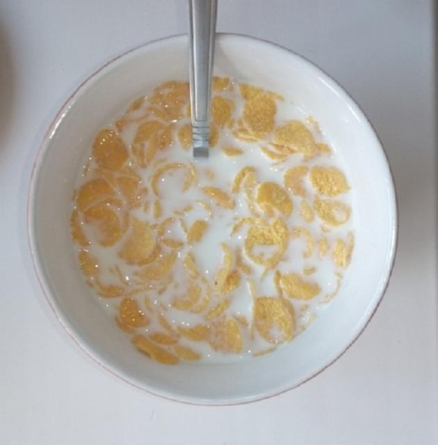

Cornflakes with milk

The most common cereals with milk :(
Anyone can cook this dish, even if you are super lazy. Yes, and quite cheap and you can modify the dish!
What is needed for this dish:
Cornflakes (with sugar)
0.750 ml milk (best 4.2% fat)
Bowl
Spoon!
How to cook (step-by-step instruction)
Open the package with cereals, but very carefully, otherwise you can overdo it :O
Pour the cereal into a bowl.
Remove milk from refrigerator and pour over flakes. If the milk is closed, then open it.
Take a spoon out of the drawer and stir.
The original recipe (of course this is kcal)
Mark Kaarma © 2020